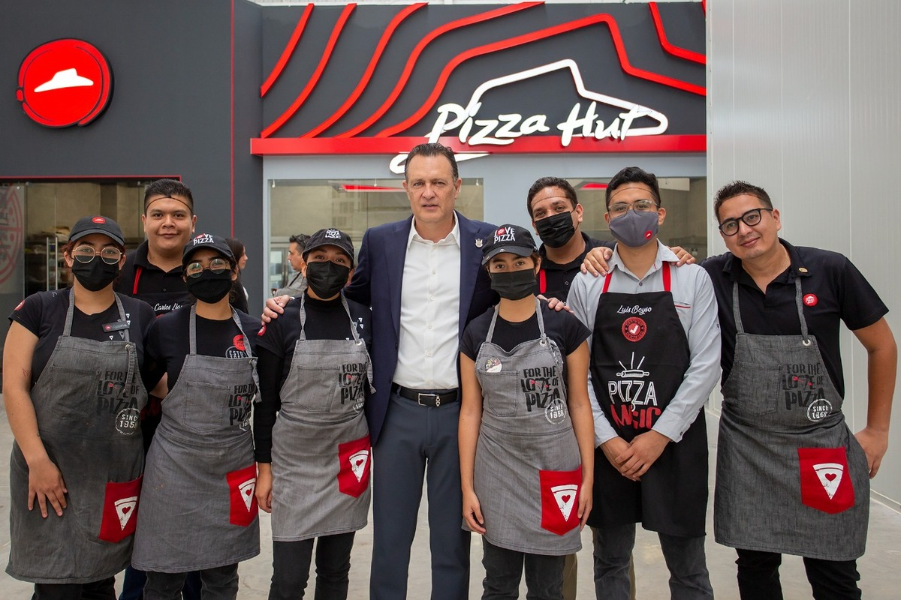
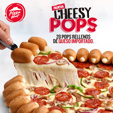

¿Quien es PizzaHut?
Pizza Hut es una cadena internacional de restaurantes fundada en 1958 en Wichita, Kansas. Es conocida por sus pizzas de estilo americano, especialmente su masa pan pizza, además de ofrecer pastas, alitas, postres y otros platillos. A lo largo de los años, Pizza Hut se ha convertido en una de las marcas de comida rápida más reconocidas del mundo.

cheesy pop de Pizza Hut
Es una pizza con un borde formado por bolitas de pan rellenas de queso mozzarella. Estas se desprenden fácilmente, ofreciendo una forma divertida de comer mientras el centro mantiene la clásica base e ingredientes.
